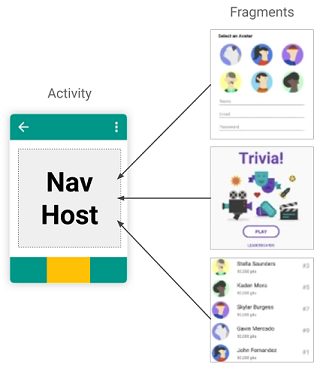
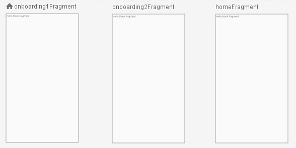

Fragments
El objetivo de esta práctica es trabajar con Fragments.
Un Fragment
representa un comportamiento o una parte de la interfaz de usuario en una
Activity.
Puedes combinar múltiples fragmentos en una sola actividad para crear una IU multipanel y volver a
usar un fragmento en múltiples actividades. Puedes pensar en un fragmento como una sección modular
de una actividad que tiene su ciclo de vida propio, recibe sus propios eventos de entrada y que
puedes agregar o quitar mientras la actividad se esté ejecutando (algo así como una
"subactividad" que puedes volver a usar en diferentes actividades).
Programaremos un proceso de onboarding para una app:
 https://github.com/gerardfp/fragments
https://github.com/gerardfp/fragments
Vista general del componente Navigation
El componente Navigation consiste en tres partes clave:
Navigation Graph (XML resource) -
Es un recurso que contiene toda la información relativa a la navegación en un lugar centralizado.
Esto incluye todos los lugares de la app, conocidas como destinos, y todos los
caminos posibles que un usuario puede tomar en la app

NavHostFragment (Layout XML) - Es un widget especial que añades al layout. En él se muestran
los diferentes destinos del Grafo de Navegación.

- NavController (Java object) - Es un objeto que realiza un seguimiento de la posición actual
dentro del grafo de navegación. Realiza el intercambio del contenido de destino en el NavHostFragment según
el usuario se mueve por el grafo de navegación.
Cuando navegas, utilizas el objeto NavController, diciéndole dónde quieres ir o
qué camino quieres tomar en Grafo de Navegación. El NavController mostrará el destino
apropiado en el NavHostFragment.
Crea el proyecto
-
Selecciona Empty Activity como plantilla para la MainActivity
-
Añade las dependencias para incluir el soporte Navigation:
build.gradle (Module: app)
dependencies {
def nav_version = "2.3.0"
implementation "androidx.navigation:navigation-fragment:$nav_version"
implementation "androidx.navigation:navigation-ui:$nav_version"
}
Puedes añadir las dependencias ahora mismo, o también puedes dejar que sea
el propio Android Studio el que las añada automáticamente cuando crees
el grafo de navegación en la siguiente sección.
Crea el Grafo de Navegación
Sobre la carpeta raiz del proyecto haz clic-derecho y selecciona
NewAndroid Resource File
Introduce el nombre del fichero del grafo, por ejemplo: nav_graph.
En el Resource type selecciona Navigation

Añade los fragments al grafo de navegación
Añadiremos 3 destinos al grafo de navegación. Dos destinos para el Onboarding, y uno
que será la pantalla Home de la app.

Abre el fichero res/navigation/nav_graph.xml en modo Design, y haz click sobre el icono "New Destination" 

Haz click en Create new destination

Seleciona Fragment (Blank) como plantilla para el Fragment:

Introduce el nombre Onboarding1Fragment:

Repite el proceso para crear los fragments Onboarding2Fragment
y HomeFragment

El icono  sobre el onboarding1Fragment indica
que este es el destino que se
mostrará en primer lugar: el Start Destination.
sobre el onboarding1Fragment indica
que este es el destino que se
mostrará en primer lugar: el Start Destination.
Puedes cambiar en cualquier momento el Start Destination seleccionando un destino
y clicando en el icono de la barra.
Conecta los destinos
La navegación entre destinos se define creando acciones de navegación.
Para crear una acción hay que hacer clic sobre el manejador de orgien
de un destino y arrastrarlo sobre el siguiente destino:

Crea las 2 acciones de navegación:
- Del onboarding1Fragment al onboarding2Fragment
- Del onboarding2Fragment al homeFragment

Observa que en el código XML del archivo res/navigation/nav_graph.xml
se han añadido las <action> de navegación:
res/navigation/nav_graph.xml
...
<action
android:id="@+id/action_onboarding1Fragment_to_onboarding2Fragment"
app:destination="@id/onboarding2Fragment"/>
...
<action
android:id="@+id/action_onboarding2Fragment_to_homeFragment"
app:destination="@id/homeFragment" />
...
Más adelante utilizaremos los identificadores de estas acciones para implementar la navegación.
Añade el NavHost
En el layout de la MainActivity (activity_main.xml) añade
un <FragmentContainerView> que será el NavHostFragment:
res/layout/activity_main.xml
<?xml version="1.0" encoding="utf-8"?>
<androidx.constraintlayout.widget.ConstraintLayout
xmlns:android="http://schemas.android.com/apk/res/android"
xmlns:app="http://schemas.android.com/apk/res-auto"
android:layout_width="match_parent"
android:layout_height="match_parent">
<androidx.fragment.app.FragmentContainerView
android:name="androidx.navigation.fragment.NavHostFragment"
android:id="@+id/nav_host_fragment"
android:layout_width="match_parent"
android:layout_height="match_parent"
app:defaultNavHost="true"
app:navGraph="@navigation/nav_graph" />
</androidx.constraintlayout.widget.ConstraintLayout>
Puedes ver el NavHostFragment como un hueco en el cual se irán poniendo
los diferentes destinos según se vaya navegando. Observa que lo hemos enlazado con el grafo
de navegación que acabamos de crear mediante el atributo
app:navGraph="@navigation/nav_graph"
Diseña de las pantallas
Añade las imágenes
Puedes descargar las imágenes del repositorio del proyecto:
onboarding1.svg
onboarding2.svg
O puedes usar las imágenes que quieras, por ejemplo de unDraw, DrawKit, humaaans, design.ai...
Encima del directorio app, haz clic-derecho y
selecciona NewVector Asset

Selecciona Asset Type: Local file e introduce la ruta del
fichero onboarding1.svg:

Repite lo mismo para la imagen onboarding2.svg.

Diseña el layout
Por defecto, el layout de los fragments creados contiene un FrameLayout.
Este layout está pensado para contener un único child. Cambiémoslo por
un ConstraintLayout:
Abre el fichero res/layout/fragment_onboarding1.xml en modo
Code y sustituye el FrameLayout por un ConstraintLayout:

En cada pantalla añadiremos una imagen, un texto y un botón:
Para añadir una imagen usamos el widget ImageView. La imagen que se debe mostrar
se define en el atributo android:src.
Es importante establecer el atributo android:adjustViewBounds
a true. Esto hace que los límites (el borde) del ImageView se ajusten al tamaño
de la imagen.
<ImageView
android:layout_width="wrap_content"
android:layout_height="wrap_content"
android:adjustViewBounds="true"
android:src="@drawable/ic_onboarding1"/>
También puedes usar el modo Design para añadir la imagen:


Añadimos también el TextView y el Button.
Modificamos algunos atributos para añadir colores de fondo, paddings, tamaños de letra,
etc... También creamos las constraints necesarias y definimos
unos identificadores apropiados.
El layout fragment_onboarding1.xml queda finalmente así:
res/layout/fragment_onboarding1.xml
<?xml version="1.0" encoding="utf-8"?>
<androidx.constraintlayout.widget.ConstraintLayout xmlns:android="http://schemas.android.com/apk/res/android"
xmlns:app="http://schemas.android.com/apk/res-auto"
android:layout_width="match_parent"
android:layout_height="match_parent"
android:background="#4CAF50"
android:padding="32dp">
<ImageView
android:id="@+id/imagen"
android:layout_width="wrap_content"
android:layout_height="wrap_content"
android:adjustViewBounds="true"
android:src="@drawable/ic_onboarding1"
app:layout_constraintBottom_toTopOf="@+id/texto"
app:layout_constraintTop_toTopOf="parent"
app:layout_constraintLeft_toLeftOf="parent"
app:layout_constraintRight_toRightOf="parent"/>
<TextView
android:id="@+id/texto"
android:layout_width="wrap_content"
android:layout_height="wrap_content"
android:text="!Discover the garlic soup!"
android:textColor="#FFFFFF"
android:textSize="30sp"
app:layout_constraintBottom_toTopOf="@+id/botonSiguiente"
app:layout_constraintTop_toBottomOf="@id/imagen"
app:layout_constraintLeft_toLeftOf="parent"
app:layout_constraintRight_toRightOf="parent"/>
<Button
android:id="@+id/botonSiguiente"
android:layout_width="match_parent"
android:layout_height="wrap_content"
android:backgroundTint="#FFEB3B"
android:text="Next"
app:layout_constraintTop_toBottomOf="@id/texto"
app:layout_constraintBottom_toBottomOf="parent"
app:layout_constraintLeft_toLeftOf="parent"
app:layout_constraintRight_toRightOf="parent" />
</androidx.constraintlayout.widget.ConstraintLayout>
El resultado es este:

Para el fragment_onboarding2.xml cambiamos la imagen, el texto y los colores:
res/layout/fragment_onboarding2.xml
<?xml version="1.0" encoding="utf-8"?>
<androidx.constraintlayout.widget.ConstraintLayout xmlns:android="http://schemas.android.com/apk/res/android"
xmlns:app="http://schemas.android.com/apk/res-auto"
android:layout_width="match_parent"
android:layout_height="match_parent"
android:background="#00BCD4"
android:padding="32dp">
<ImageView
android:id="@+id/imagen"
android:layout_width="wrap_content"
android:layout_height="wrap_content"
android:adjustViewBounds="true"
android:src="@drawable/ic_onboarding2"
app:layout_constraintBottom_toTopOf="@+id/texto"
app:layout_constraintLeft_toLeftOf="parent"
app:layout_constraintRight_toRightOf="parent"
app:layout_constraintTop_toTopOf="parent" />
<TextView
android:id="@+id/texto"
android:layout_width="wrap_content"
android:layout_height="wrap_content"
android:text="¡Blow and make bottles!"
android:textColor="#FFFFFF"
android:textSize="30sp"
app:layout_constraintBottom_toTopOf="@+id/botonFinalizar"
app:layout_constraintLeft_toLeftOf="parent"
app:layout_constraintRight_toRightOf="parent"
app:layout_constraintTop_toBottomOf="@id/imagen" />
<Button
android:id="@+id/botonFinalizar"
android:layout_width="match_parent"
android:layout_height="wrap_content"
android:backgroundTint="#FFC107"
android:text="Finish"
app:layout_constraintBottom_toBottomOf="parent"
app:layout_constraintLeft_toLeftOf="parent"
app:layout_constraintRight_toRightOf="parent"
app:layout_constraintTop_toBottomOf="@id/texto" />
</androidx.constraintlayout.widget.ConstraintLayout>

El diseño de la pantalla Home la obviamos en esta práctica, ya que depende de la app que se vaya a implementar.
Implementa la Navegación
El siguiente paso es añadir los listeners a los botones para que al ser pulsados
naveguen a la siguiente pantalla.
Abrimos el fichero Onboarding1Fragment.java. En este fichero vemos un
código boilerplate generado por el asistente. Por el momento este código no
nos interesa, así que borramos todo lo que hay antes del método
onCreateView(), hasta dejar la clase Onboarding1Fragment así:
Onboarding1Fragment.java
public class Onboarding1Fragment extends Fragment {
@Override
public View onCreateView(@NonNull LayoutInflater inflater, ViewGroup container,
Bundle savedInstanceState) {
return inflater.inflate(R.layout.fragment_onboarding1, container, false);
}
}
Con ViewBinding:
public class Onboarding1Fragment extends Fragment {
private FragmentOnboarding1Binding binding;
@Override
public View onCreateView(@NonNull LayoutInflater inflater, ViewGroup container,
Bundle savedInstanceState) {
return (binding = FragmentOnboarding1Binding.inflate(inflater, container, false)).getRoot();
}
}
Este método onCreateView() es similar a la llamada a setContentView() que
vimos en la práctica anterior. Su función es establecer el fichero de
layout para el Fragment, es decir, lo que se verá cuando se
navegue a este fragment.
Implementa el método onViewCreated()
De forma general, podemos decir que el código que se ha de ejecutar en un fragment se
pone en el método onViewCreated(). Este método lo ejecutará el Sistema
Android una vez se haya establecido el layout del Fragment, es decir, cuando haya
terminado el onCreateView().
Implementemos este método:
 Onboarding1Fragment.java
Onboarding1Fragment.java
public class Onboarding1Fragment extends Fragment {
@Override
public View onCreateView(@NonNull LayoutInflater inflater, ViewGroup container,
Bundle savedInstanceState) {
return inflater.inflate(R.layout.fragment_onboarding1, container, false);
}
@Override
public void onViewCreated(@NonNull View view, @Nullable Bundle savedInstanceState) {
super.onViewCreated(view, savedInstanceState);
}
}
Añade los listeners a los botones
Tal como vimos en la práctica anterior, el primer paso será vincular los botones
que hemos añadido en el layout XML con variables Java. Para ello usamos el
método findViewById().
Cuando trabajamos con fragments las llamadas a findViewById() las realizaremos
en sobre el parámetro view, del método onViewCreated(). Este parámatro
view que nos pasa el Sistema Android corresponde al layout que se creó en el método
onCreateView().

Declaramos la variable para el botón y usamos findViewById() para vincularlo al
botón del XML:
Onboarding1Fragment.java
public class Onboarding1Fragment extends Fragment {
Button botonSiguiente;
@Override
public View onCreateView(@NonNull LayoutInflater inflater, ViewGroup container,
Bundle savedInstanceState) {
return inflater.inflate(R.layout.fragment_onboarding2, container, false);
}
@Override
public void onViewCreated(@NonNull View view, @Nullable Bundle savedInstanceState) {
super.onViewCreated(view, savedInstanceState);
botonSiguiente = view.findViewById(R.id.botonSiguiente);
}
}
Si has usado ViewBinding, no es necesario crear la variable
botonSiguiente ni llamar a findViewById().
Simplemente accede al botón con binding.botonSiguiente.
El segundo paso será añadir el listener al botonSiguiente:
Onboarding1Fragment.java
public class Onboarding1Fragment extends Fragment {
Button botonSiguiente;
@Override
public View onCreateView(@NonNull LayoutInflater inflater, ViewGroup container,
Bundle savedInstanceState) {
return inflater.inflate(R.layout.fragment_onboarding2, container, false);
}
@Override
public void onViewCreated(@NonNull View view, @Nullable Bundle savedInstanceState) {
super.onViewCreated(view, savedInstanceState);
botonSiguiente = view.findViewById(R.id.botonSiguiente);
botonSiguiente.setOnClickListener(new View.OnClickListener() {
@Override
public void onClick(View view) {
// navegar al onboarding2
}
});
}
}
Usa el NavController para navegar entre destinos
Para navegar a los diferentes destinos, android proporciona la
clase NavController. Esta clase es la responsable de intercambiar en el
NavHost los diferentes fragments de la app.
Para usar el NavController, primero lo guardamos en una variable con el
método Navigation.findNavController(), y luego ya podemos llamar al método
navigate() y pasarle la acción de navegacion que se debe realizar.
-
Recuperamos el NavController con findNavController():
Onboarding1Fragment.java
public class Onboarding1Fragment extends Fragment {
Button botonSiguiente;
NavController navController;
@Override
public View onCreateView(@NonNull LayoutInflater inflater, ViewGroup container,
Bundle savedInstanceState) {
return inflater.inflate(R.layout.fragment_onboarding2, container, false);
}
@Override
public void onViewCreated(@NonNull View view, @Nullable Bundle savedInstanceState) {
super.onViewCreated(view, savedInstanceState);
navController = Navigation.findNavController(view);
botonSiguiente = view.findViewById(R.id.botonSiguiente);
botonSiguiente.setOnClickListener(new View.OnClickListener() {
@Override
public void onClick(View view) {
// navegar al onboarding2
}
});
}
}
Llamamos al metodo navigate() dentro del listener para
que navegue al siguiente Fragment cuando se haga clic en el botón:
Onboarding1Fragment.java
public class Onboarding1Fragment extends Fragment {
Button botonSiguiente;
NavController navController;
@Override
public View onCreateView(@NonNull LayoutInflater inflater, ViewGroup container,
Bundle savedInstanceState) {
return inflater.inflate(R.layout.fragment_onboarding2, container, false);
}
@Override
public void onViewCreated(@NonNull View view, @Nullable Bundle savedInstanceState) {
super.onViewCreated(view, savedInstanceState);
navController = Navigation.findNavController(view);
botonSiguiente = view.findViewById(R.id.botonSiguiente);
botonSiguiente.setOnClickListener(new View.OnClickListener() {
@Override
public void onClick(View view) {
navController.navigate(R.id.action_onboarding1Fragment_to_onboarding2Fragment);
}
});
}
}
El parámetro pasado al método navigate() es el identificador de la
acción de navegación que se debe realizar. En este caso
del onboarding1 al onboarding2.
Repetimos el mismo proceso en el Onboarding2Fragment, cambiando el identificador
del botón, y el identificador de la acción de navegación:
Onboarding2Fragment.java
public class Onboarding2Fragment extends Fragment {
Button botonFinalizar;
NavController navController;
@Override
public View onCreateView(@NonNull LayoutInflater inflater, ViewGroup container,
Bundle savedInstanceState) {
return inflater.inflate(R.layout.fragment_onboarding2, container, false);
}
@Override
public void onViewCreated(@NonNull View view, @Nullable Bundle savedInstanceState) {
super.onViewCreated(view, savedInstanceState);
navController = Navigation.findNavController(view);
botonFinalizar = view.findViewById(R.id.botonFinalizar);
botonFinalizar.setOnClickListener(new View.OnClickListener() {
@Override
public void onClick(View view) {
navController.navigate(R.id.action_onboarding2Fragment_to_homeFragment);
}
});
}
}
Ahora puedes ejecutar la app y probar la navegación.
Añade transiciones a la navegación
Por defecto la transición entre los destinos de navagación es bastante insulsa.
Simplemente coloca un destino sobre otro.
Podemos personalizar la manera en que aparece el fragment de destino y la manera en
que desaparece el fragment de origen.
Las transiciones de una acción de navegación (<action>) se definen en 4 atributos:
- enterAnim y exitAnim: definen como entra el fragment
destino y como sale el fragment origen, cuando se
navega "hacia adelante"
- popEnterAnim y popExitAnim: definen la transición
cuando se navega "hacia atrás" (pulsando el botón atrás)
Android incorpora una serie de animaciones por defecto, y también permite
definir tus propias animaciones. Haremos lo segundo.
Define las animaciones
Para esta aplicación haremos que el fragment destino aparezca deslizándose
desde la derecha, y el fragment origen desaparezca deslizándose hacia la izquierda:
Para ello, definiremos cuatro animaciones: slide_in_right,
slide_in_left, slide_out_right y slide_out_left.
Sobre el directiorio app, haz clic-derecho y selecciona
NewAndroid Resource File

Introduce el nombre de la animación slide_in_right, y selecciona
Animation como Resource Type:

En el fichero res/anim/slide_in_right.xml que se ha creado,
define la animación slide_in_right:
slide_in_right.xml
<?xml version="1.0" encoding="utf-8"?>
<set xmlns:android="http://schemas.android.com/apk/res/android">
<translate
android:fromXDelta="100%" android:toXDelta="0%"
android:duration="700"/>
</set>
Define también la animación slide_out_left:
slide_out_left.xml
<?xml version="1.0" encoding="utf-8"?>
<set xmlns:android="http://schemas.android.com/apk/res/android">
<translate
android:fromXDelta="0%" android:toXDelta="-100%"
android:duration="700"/>
</set>
La animación slide_out_right:
slide_out_right.xml
<?xml version="1.0" encoding="utf-8"?>
<set xmlns:android="http://schemas.android.com/apk/res/android">
<translate
android:fromXDelta="0%" android:toXDelta="100%"
android:duration="700"/>
</set>
Y la animación slide_in_left:
slide_in_left.xml
<?xml version="1.0" encoding="utf-8"?>
<set xmlns:android="http://schemas.android.com/apk/res/android">
<translate
android:fromXDelta="-100%" android:toXDelta="0%"
android:duration="700"/>
</set>
En las animaciones que hemos creado, simplemente realizamos un movimiento (translate)
horizontal (fromXDelta 🡒 toXDelta).
Hay diversos tipos de animación que se pueden crear: transparencias, tamaños, rotación.
Para +info consulta:
Animación de vistas.
Además de las animaciones en la navegación, Android incorpora el MotionLayout
para crear animaciones dentro de una "pantalla". Consulta
Construye animaciones con el Motion Editor
Asigna las animaciones a las acciones
Abre el fichero nav_graph.xml y establece los siguientes atributos a las
dos acciones:
nav_graph.xml
<action
...
app:enterAnim="@anim/slide_in_right"
app:exitAnim="@anim/slide_out_left"
app:popEnterAnim="@anim/slide_in_left"
app:popExitAnim="@anim/slide_out_right" />
También lo puedes hacer en modo Design.
Selecciona cada acción y establece los atributos
enterAnim, exitAnim, popEnterAnim y popExitAnim:

El resultado final es este:
Práctica: Onboarding
Implementa un Onboarding de 3 pantallas. En las dos primeras
debe haber una opción para omitir (skip).
Utilitza diferentes animaciones en cada acción de navegación.
Ejemplo:

Grafo de navegación: